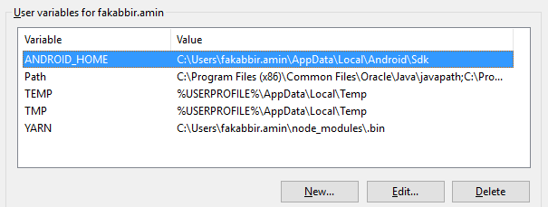

SDK location not found. Define location with sdk.dir in the local.properties file or with an ANDROID_HOME environment variable
I recently tried to import sample Android games I downloaded from Google's developer website. After importing them into Android Studio, I'm getting the following error:
Error: SDK location not found. Define location with
sdk.dirin the local.properties file or with anANDROID_HOMEenvironment variable.
What is this? I want to run the sample programs from Android Studio.
Answer
Please follow the below steps:
- Go to your react-native Project then go to the android directory Create a file with the following name:
local.properties
- Open the file and paste your Android SDK path like below:
For windows users:
sdk.dir=C:\\Users\\UserName\\AppData\\Local\\Android\\sdk
or (for newer versions of Android Studio / IntelliJ IDEA):
sdk.dir=C\:\\Users\\USERNAME\\AppData\\Local\\Android\\sdk
Where USERNAME your PC user name. Also, make sure the folder is sdk or Sdk.
Example:
sdk.dir=C:\\Users\\USERNAME\\AppData\\Local\\Android\\sdk
or:
sdk.dir=C\:\\Users\\USERNAME\\AppData\\Local\\Android\\Sdk
For Mac users:
sdk.dir = /Users/USERNAME/Library/Android/sdk
Where USERNAME is your OSX username.
For Linux (Ubuntu) users:
sdk.dir = /home/USERNAME/Android/Sdk
Where USERNAME is your linux username (Linux paths are case-sensitive: make
sure the case ofS in Sdk matches)
In case this doesn't work, add ANDROID_HOME variable in "Environment
Variables" as C:\Users\USER\AppData\Local\Android\Sdk

Suggest
The project might be missing a settings.gradle file. Make sure that file
exists from the project you are importing. If not add the settings.gradle
file with the following :
include ':app'
Save the file and put it at the top level folder in your project.